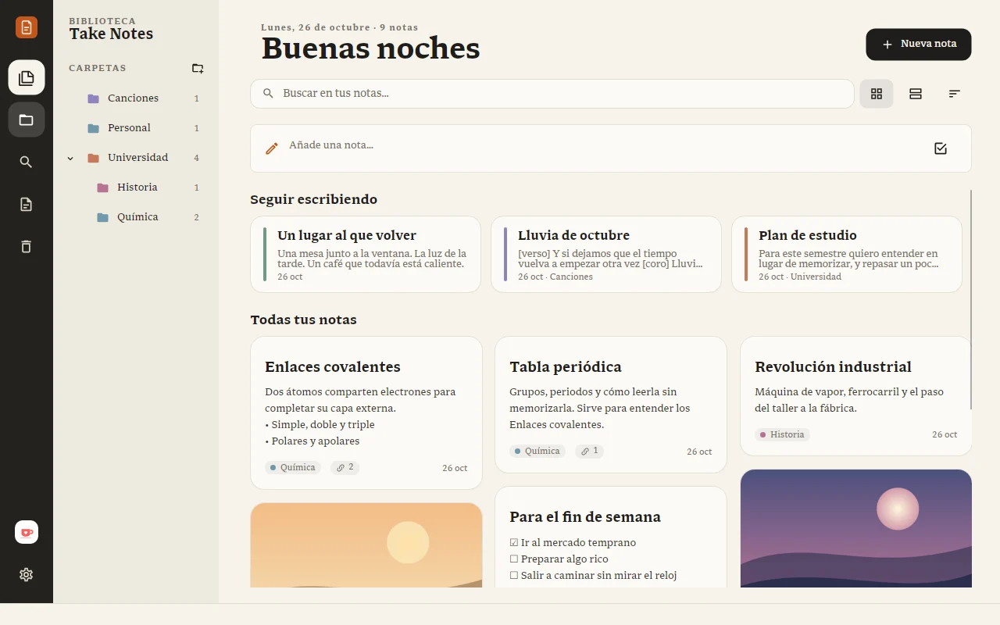
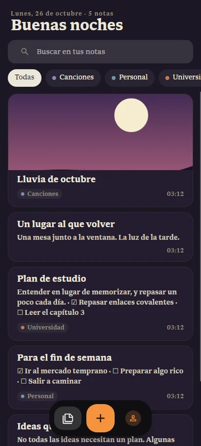
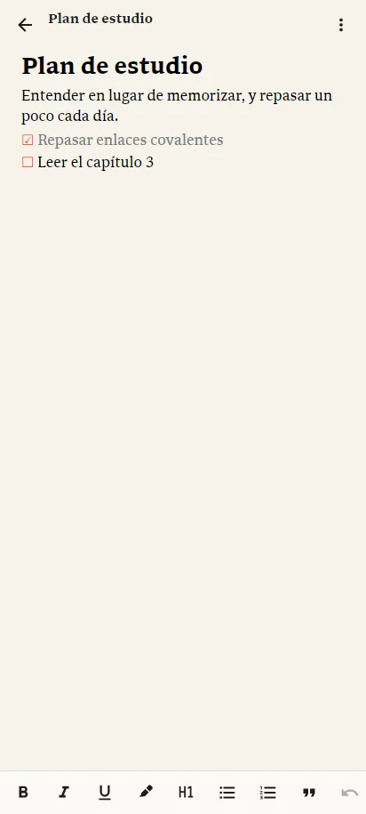

Editor flotante
Escribe encima de tu biblioteca y ciérralo con Esc: la nota se guarda sola. Títulos, tareas, citas, tablas e imágenes, y ortografía en varios idiomas a la vez.

Notas · Listas · Canciones
Tus notas, tus listas y las letras de tus canciones en un solo texto que fluye. En el computador y en el teléfono, iguales en todos tus equipos si quieres. Gratis y sin anuncios.




Funciones
Lo que esperas de un procesador de textos, con la calma de una libreta. Nada que distraiga de lo que estás escribiendo.
Escribe encima de tu biblioteca y ciérralo con Esc: la nota se guarda sola. Títulos, tareas, citas, tablas e imágenes, y ortografía en varios idiomas a la vez.
Escribe [[ y enlaza otra nota sin soltar el teclado. Si no existe, se crea en el momento.

Carpetas con su propio color, notas que arrastras a su lugar y portadas para las que quieras distinguir.

Convierte cualquier nota en una letra sincronizada: marca cada línea con Espacio mientras suena la canción. Lo que va entre corchetes no se canta.
Guía de Lyrics
Tema claro u oscuro, colores de acento, español, inglés o portugués, y accesibilidad: tamaño de la interfaz, alto contraste y foco visible.

Nuevo en 1.2
Elige un fondo para tu letra sincronizada: cinco colores, tu propia foto difuminada o una pantalla verde. Exporta en horizontal, vertical para reels o cuadrado, hasta 4K y a 60 cuadros por segundo, o con fondo transparente para tu editor de video. Se ve igual que la vista de letra.

Computador y teléfono
La app para Android tiene el mismo papel y la misma calma, pensada para el dedo, y pesa unos 22 MB. Activa la sincronización y tus notas, carpetas y canciones quedan iguales en el computador y en el teléfono.
Si una nota cambia en dos lugares a la vez, se guardan las dos versiones. La sincronización viene apagada: tus notas salen de tu equipo solo si tú lo decides.
«# » para un título, «- » para una lista, **negrita** y *cursiva* sin soltar el teclado. Comillas, rayas y puntos suspensivos tipográficos, modo máquina de escribir y meta de palabras.
Claude Code, Codex, opencode y otros pueden buscar en tus notas y dejarte notas nuevas, desde la terminal o tu editor. Todo pasa en tu equipo, y tú decides qué pueden hacer.
Cómo conectarlosEtiqueta tus notas y encuéntralas buscando #etiqueta. Exporta a un PDF o un Word con el estilo de tu nota, o a una página web lista para compartir.
¿Quieres probar lo nuevo antes que nadie, como las presentaciones? Pide entrar al programa experimental en Configuración › Experimental.
Take Notes no vende tus datos ni te muestra publicidad. Lo sostienen las personas que lo apoyan.
Funciona sin conexión y guarda cada nota como un archivo en tu equipo. Sincroniza solo si quieres y exporta a Word, PDF, página web o Markdown cuando lo necesites.
Abres y escribes. Las actualizaciones llegan solas, con sus novedades, también en el teléfono.
Gratis para Windows, Linux y Android. Se actualiza solo.
Windows 10 u 11, 64 bits
Descargar instalador Versión portable (.zip)Como Take Notes es nuevo, Windows puede mostrar «Windows protegió su PC». Pulsa Más información y luego Ejecutar de todas formas.
Cualquier distribución de 64 bits. Instala con un comando, sin sudo:
curl -fsSL https://oriontheprogrammer.github.io/TakeNotes-releases/install.sh | sh
Descarga Take Notes en tu carpeta personal, lo agrega al menú de aplicaciones y crea el comando takenotes. Se sigue actualizando solo. Para quitarlo, agrega -s -- --uninstall al final: tus notas no se tocan.
Con la AppImage: dale permiso de ejecución y ábrela con doble clic, o chmod +x TakeNotes.AppImage.
Android 8 o más nuevo · en Google Play
Descargar en Google PlayInstala la versión de Google Play encima: no hace falta desinstalar y tus notas se quedan. Desde ahí, Google Play la mantiene al día.
Novedades de cada versión · Primeros pasos · Versiones anteriores

Take Notes es gratis y lo desarrollo yo solo. Cada café ayuda a pagar el servidor y me da tiempo para seguir mejorándolo. Si donas con el correo de tu cuenta, recibes una insignia en la app.
Invítame un café en Ko-fi